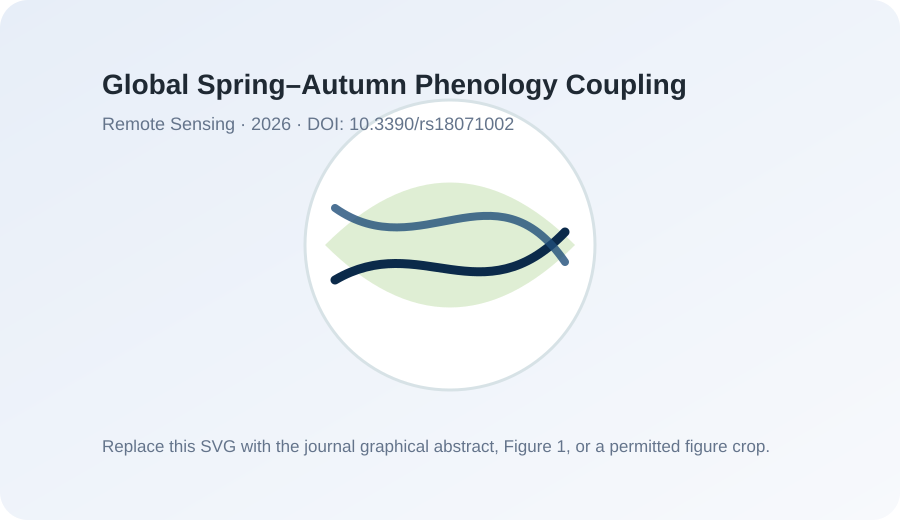

Publications
论文与学术成果
Publications
论文
Peer-reviewed articles, thesis, patent, and selected manuscripts. Add paper figures or graphical abstracts when they are ready to share.
正式发表论文、毕业论文、专利与部分进行中的研究。可以为重点论文添加论文插图或 graphical abstract。
Peer-reviewed articles
正式发表论文

Li, X., Wei, Y., Qiu, T., Donnelly, A., & Wang, Y. (2026). Global spring–autumn phenology coupling inferred from satellite observations and reanalysis-based climate limitations.
Remote Sensing, 18(7), 1002.
Figure slot: replace the SVG with a permitted paper figure or graphical abstract.
图片位：可替换为允许公开使用的论文插图或 graphical abstract。
-
Chen, H., Wei, Y., & Qiu, T. (2026). Phenological responses to canopy structure depend on vegetation biomes across the United States.
Global Change Biology, 32(2), e70749.
-
Wang, M., Wei, Y., & Pi, Y. (2023). Geometric positioning integrating optical satellite stereo imagery and a global database of ICESat-2 laser control points: A framework and key technologies.
Geo-spatial Information Science, 26(2), 206–217.
-
Wang, M., Wei, Y., Yang, B., & Zhou, X. (2021). ICESat-2/ATLAS global elevation control point extraction and analysis.
Geomatics and Information Science of Wuhan University, 46(2), 184–192.
Thesis
学位论文
- Wei, Y. (2023). Research on the construction of a global spaceborne lidar control point database and its assistance in block-adjustment positioning.韦钰. (2023). 全球星载激光控制点数据库构建及辅助区域网平差定位方法研究.
Master’s thesis, Wuhan University.
硕士学位论文，武汉大学。
Patent
专利
- Wang, M., Wei, Y., & Yang, B. (2021). ICESat-2/ATLAS global elevation control point extraction method and system. CN112985358A.王密，韦钰，杨博. (2021). ICESat-2/ATLAS 全球高程控制点提取方法及系统. CN112985358A.
China patent application publication.
中国发明专利申请公布。
Manuscripts and ongoing work
进行中的研究
Before making this page public, update each item as “in preparation,” “under review,” “accepted,” or “published.”
公开网站前，建议把每一项的状态明确更新为 “in preparation / under review / accepted / published”。
- Which metrics best capture plant biodiversity from hyperspectral remote sensing?哪些指标最能通过高光谱遥感捕捉植物生物多样性？
- Climate-mediated spectral–biodiversity relationships across U.S. biomes.美国不同生物群系中气候调节的光谱—生物多样性关系。
- Functional diversity and ecosystem function from imaging spectroscopy and remote sensing.基于成像光谱与遥感的功能多样性和生态系统功能研究。